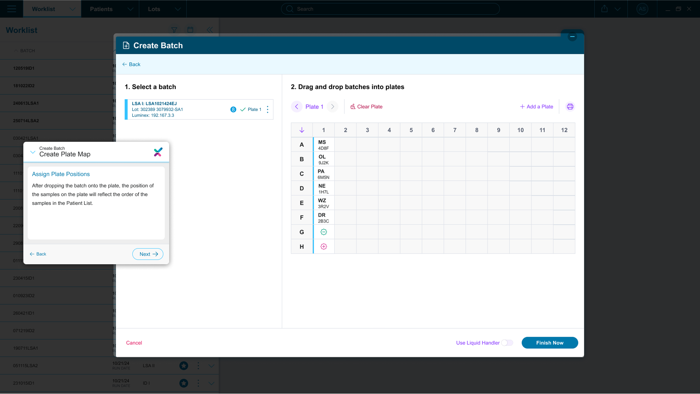
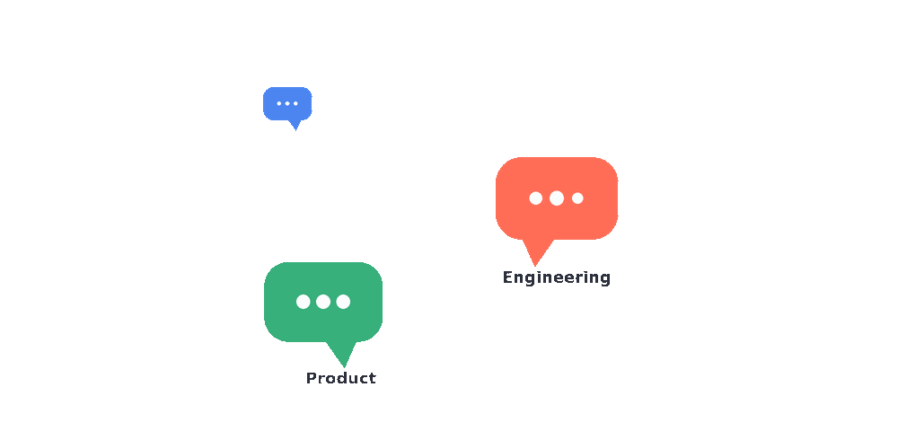
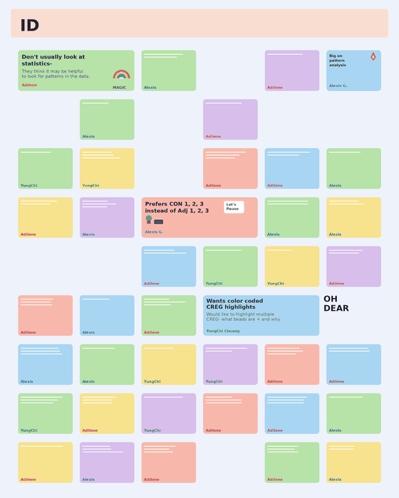
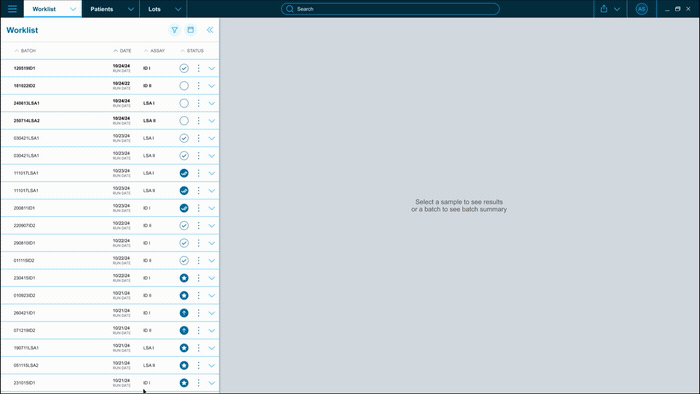
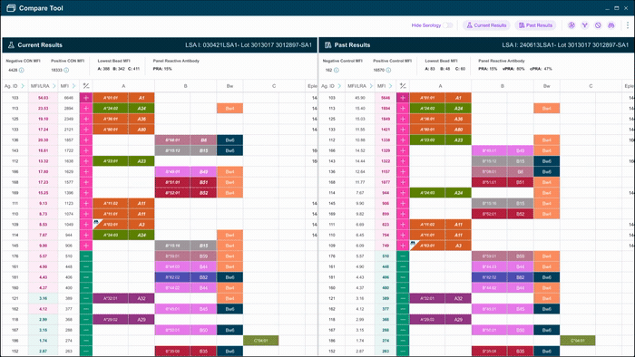
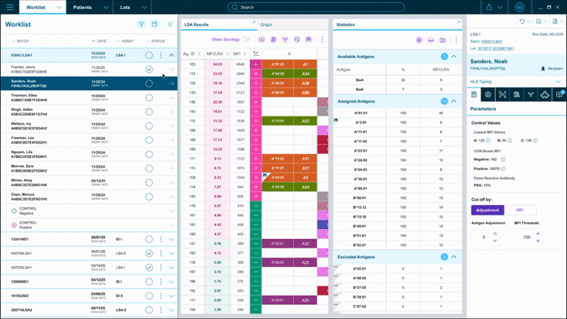
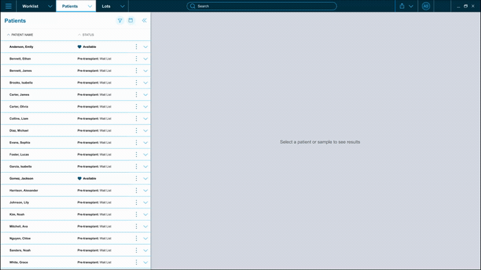
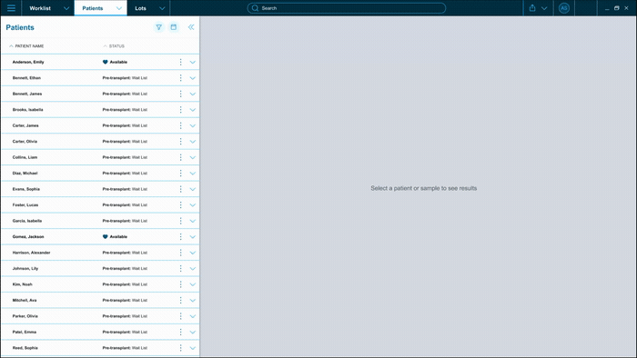
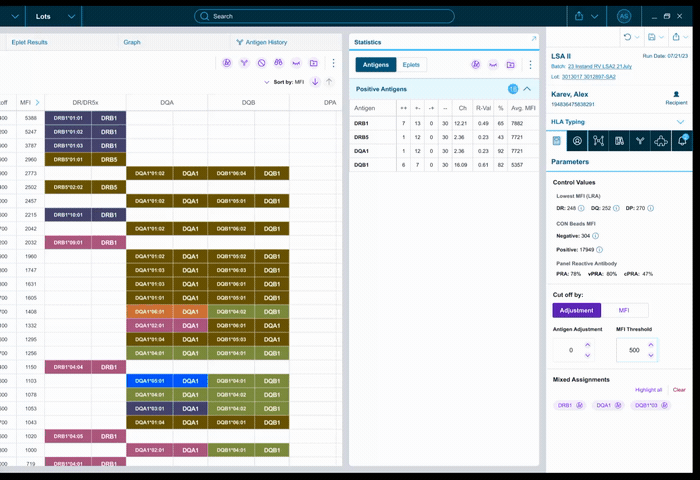
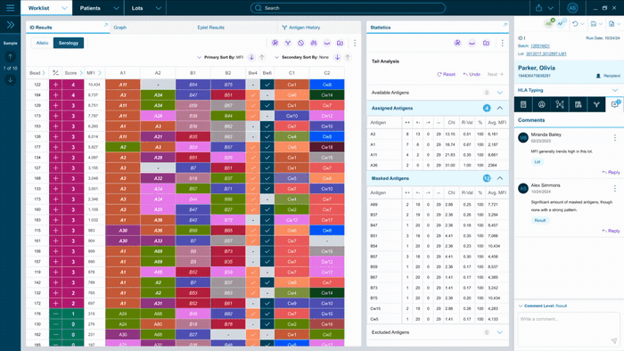

Joining a two-year effort already in motion.
MatchX unifies three separate, fragmented tools. DNA, Antibody, and Platelet Antibody analysis, into one platform for transplant histocompatibility labs, built for Immucor (now part of Werfen). I joined the team in January 2023, about two years into the project, as a Product Designer working under our lead designer alongside research, human factors, product, and engineering.
By the time I came on, the core direction was already set. My work centered on the next phase: field research, usability testing, prototyping, and the validation work that carried the platform through to FDA clearance.
One life-critical workflow, split across three disconnected tools.
Labs ran DNA, Antibody, and Platelet workflows in separate tools, each with its own logic and navigation. Technologists patched the gaps with Excel worksheets, paper records, and manual cross-checking — slow, and risky in a workflow where the decisions carry real consequences for patients.
One platform, organized around how technologists actually work.
MatchX replaced the fragmented suite with a single, risk-driven platform — built around real lab workflows rather than the internal logic of each assay. Nothing extra, nothing in the way, nothing missing.


Tools, team, and my timeline on the project.
My time on MatchX ran from January 2023 through the project's completion in 2025 — picking up an 18-month head start and carrying research, design, and validation the rest of the way.
Absorbing 18 months of context before adding my own.
The core architecture, key insights, and early prototypes were already in place when I joined. My first weeks were about getting up to speed — sitting in on existing research, learning the clinical workflows, and understanding the decisions already made, so I could contribute without retracing ground the team had already covered.
EFI, formatives, ASHI, EFI again.
Our field research ran in a loop, not a straight line. It started at EFI in France, gathering feedback from the community in person. That fed three separate formative studies — split up because the assays carried too much complexity to rush through together, so each one got the focused time it needed. What we learned there shaped what we tested next at ASHI in San Antonio. Then came another EFI, this time in Geneva, Switzerland — I joined that one virtually to take notes rather than travel, closing the loop on that round of research. That touchpoint in Geneva is where we identified that people wanted a way to track their progress and pick up right where they left off.

Weekly alignment, not a handoff.
Define wasn't a single moment — it was a standing rhythm. I sat in weekly meetings with clients to talk through product direction, and weekly meetings with engineers to stress-test feasibility. Those conversations shaped the design in constant small tweaks, iteration after iteration, as much as any single big decision did.

From iteration to test scenarios.
The prototype that came out of that back-and-forth is what we used to build the scenarios written into the moderator guides — every round of stakeholder and engineering feedback fed directly into what we tested next. It took many passes to get there; the design was never final on the first, second, or third try.

From components to a new product.
All of that research pointed to the same thing: we needed more than UI tweaks. We evaluated new comparison and flagging tools, designed visual components for graphing trends, and built entirely new modules — including a QC module and an Antibody History view inside Patient View. We also designed the settings to support integrating third-party APIs: PIRCHE, a mismatch calculator, and HLA EMMA. I worked directly with PIRCHE's team to figure out an integration that made sense in the context of our workflow, not just theirs. What started as a redesign turned into the groundwork for a whole new product.


System Architecture
Structured around how technologists actually view and handle data — the right tools live where they're needed in the workflow, and navigation follows familiar patterns instead of asking people to relearn how to work.

In the room.
During sessions I took notes and flagged use cases worth digging into live — moments where a technologist's workaround revealed something the team hadn't considered. Those notes fed directly into synthesis and the next round of design.

The features technologists use every day.

Summaries
Aggregated data so technologists can spot reactivity patterns and validate a batch faster.

Highlights
Manual and automatic highlighting to trace information across results and patient history.

Past Results
Compares current results against past data, removing the need for extra tabs or paper records.

Antibody History
Plots trends for antigens relevant to the patient and donor, to support informed clinical decisions.

Patient View
A unified record of historical data, enhanced with APIs for a full virtual crossmatch experience.

Comments & Logs
Manual comments and automated activity logs for transparency and team collaboration.

Custom Reports
Save assets during analysis to build reports on the go, without breaking from the workflow.
From formative research to FDA clearance.
What began as a redesign of an existing suite grew, through that research, into new modules and third-party integrations — and became the groundwork for a whole new product. That expanded scope carried through validation and FDA clearance.
MatchX went through summative usability testing to meet FDA human factors requirements, supporting its submission for clearance. The platform received FDA 510(k) clearance and is currently under review for EU IVDR validation, the next step toward global adoption.
Source: MatchX FDA 510(k) Clearance – BK241067 (fda.gov)
"The subject matter was hard, but the people made it a joy — and watching every piece finally come together into one complete system is what made this the most rewarding project of my career."
More case studies